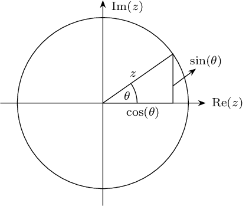
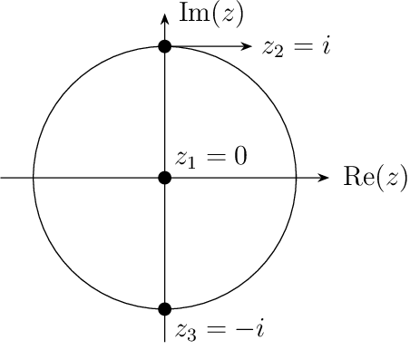
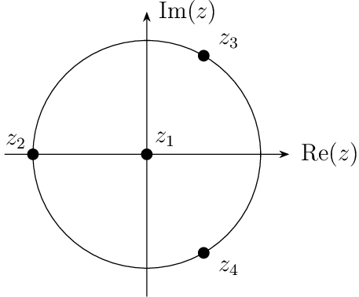

5.1. Characteristic Polynomials and Root Condition#
It is possible to derive any number of multistep methods of various order, but the most important factor related to each method is its stability property. For simplicity, we study the stability by considering a general linear multistep method,
and a test differential equation,
where \(\lambda\) is a constant.
Note
The general solution to the test problem (5.2) is
thus, the exact solution is: \(\displaystyle{y_j ~=~ y_0\,e^{\lambda(x_j-x_0)}.}\)
According to the test problem (5.2), we can substitute \( f_j = \lambda y_j \) into equation (5.1) and get
which can be re-arranged as
We can write equation (5.4) in the operator form as
and get its characteristic equation
This is a polynomial equation of degree \(k\) and has \(k\) roots, \(\,z_1, z_2, \dots, z_k\,\), which may be real or complex. If these roots are distinct, the general solution of the difference equation (5.4) is
where \(A_1\), \(A_2\), …, \(A_k\) are constant. See Section 1.4 for more details on difference and characteristic equations.
Question
What kind of conditions shall we impose to keep the general solution (5.6) bounded?
Definition 5.1 (Characteristic Polynomials)
For a general linear multistep method
the expression in the form
is called its characteristic polynomial.
Note
In some books, \(\pi(z, h\lambda)\) is used to represent the characteristic polynomial.
We call
the first characteristic polynomial, and
the second characteristic polynomial of the multistep method.
These polynomails given in equations (5.7), (5.8) and (5.9) have the following relation
Example 5.1
Find the characteristic polynomial \(L(z, h\lambda)\) for a 2-step method
Solution
Method 1:
Substituting \(\,f = \lambda\,y\,\) into the 2-step method formula, we have
\[ \alpha_0 y_{j-2} + \alpha_1 y_{j-1} + \alpha_2 y_{j} = h\lambda(\beta_0 y_{j-2} + \beta_1 y_{j-1} + \beta_2 y_{j}) \]and re-arrange it as
\[ (\alpha_0-h\lambda \beta_0) y_{j-2} + (\alpha_1-h\lambda \beta_1) y_{j-1} + (\alpha_2-h\lambda \beta_2) y_{j} = 0 \]Writing the equation in shift operator form
\[ \left[ (\alpha_0-h\lambda \beta_0) \E^0 + (\alpha_1-h\lambda \beta_1) \E^1 + (\alpha_2-h\lambda \beta_2) \E^2 \right] y_{j-2} =0 \]so the characteristic polynomial is
\[\begin{split} \begin{aligned} L(z, h\lambda) &=\sum_{i=0}^{2} (\alpha_i - h\lambda \beta_i) z^i\\ & = (\alpha_0-h\lambda \beta_0) z^0 + (\alpha_1-h\lambda \beta_1) z^1 + (\alpha_2-h\lambda \beta_2) z^2 \end{aligned} \end{split}\]Method 2:
Using (5.7) given in Definition 5.1, we can quickly work out the characteristic polynomial for this 2-step method
\[\begin{split} \begin{aligned} L(z, h\lambda) &=\sum_{i=0}^{2} (\alpha_i - h\lambda \beta_i) z^i\\ & = (\alpha_0-h\lambda \beta_0) z^0 + (\alpha_1-h\lambda \beta_1) z^1 + (\alpha_2-h\lambda \beta_2) z^2 \end{aligned} \end{split}\]
Definition 5.2 (Root Condition)
Let \(\,z_1,z_2,\dots,z_k\,\) denote the roots of the first characteristic polynomial \(\,\rho(z)\,\) associated with a linear multistep method. If \(\,|z_i|\leq1\,\), for each \(\,i=1,2,...,k\,\), and all roots with absolute value \(1\) are simple roots (i.e. not repeated), then the difference method is said to satisfy the root condition.

Fig. 5.1 Unit circle in the complex plane \(\C\).
Definition 5.3 (Stability)
A linear multistep method of order \(\,\geq1\,\) is called stable if the roots of its first characteristic polynomial \(\,\rho(z)\,\) satisfies the root condition, i.e. the roots of \(\,\rho(z)\,\) lie inside or on the unit circle, and the roots on the unit circle are distinct (or simple) - this is called the root condition.
Definition 5.4 (Strong Stability)
A method is strongly stable if the roots of \(\rho(z) = 0\) are inside the unit circle except for only one root, call principal root, with the magnitude of one(i.e. \(|z| = 1\)).
Definition 5.5 (Weak Stability)
A method is weakly stable if it is stable (i.e. satisfies the root condition) but has more than one root on the unit circle.
Example 5.2
Find the roots associated with the following characteristic polynomials:
\(\rho(z)= z^3 + z \)
Solution (click to show)
Let \(z^3 + z ~=~ 0\)
\(\therefore\quad z(z^2 + 1) ~=~ 0\)
\(\therefore\quad z_1 ~=~ 0, ~~ z_2 ~=~ i, ~~z_3 ~= -i\)We can also use Matlab to find the roots of the polynomial
p=[1 0 1 0]; %vector defining the coefficients of the polynomial roots(p) %solve the polynomial equation
Output
ans = 0.0000 + 0.0000i 0.0000 + 1.0000i 0.0000 - 1.0000i
\(z_1\), \(z_2\), and \(z_3\) are shown on the unit circle. Because there are more than one root on the unit circle, the method is weakly stable.

\(\rho(z)=z^4 + z\)
Solution (click to show)
Let \(z^4 + z ~=~ 0\)
\[\begin{split} \begin{aligned} z^4 + z & = z(z^3 + 1) \\ & = z (z+1) (z^2-z+1) \\ \end{aligned} \end{split}\]\(\therefore\quad z_1 ~=~ 0\), \(z_2 = -1\), \(z_3 = \dfrac{1}{2} + i\dfrac{\sqrt{3}}{2}\), \(z_4 = \dfrac{1}{2} - i\dfrac{\sqrt{3}}{2}\).
We can also use Matlab to find the roots of the polynomial
p=[1 0 0 1 0]; %vector defining the coefficients of the polynomial roots(p) %solve the polynomial equation
Output
ans = 0.0000 + 0.0000i -1.0000 + 0.0000i 0.5000 + 0.8660i 0.5000 - 0.8660i
Because there are more than one root on the unit circle, the method is weakly stable.
